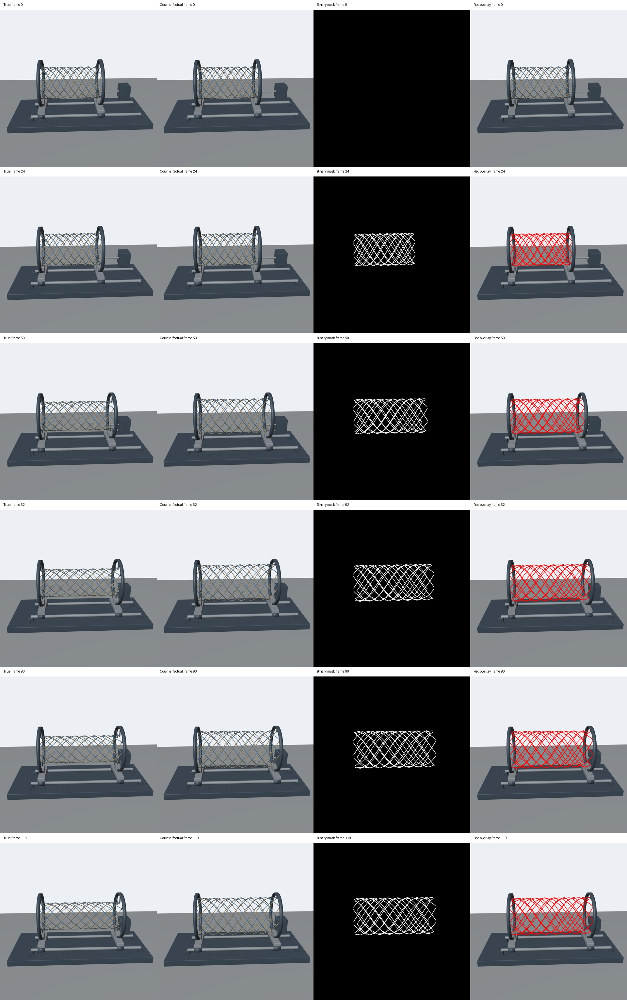
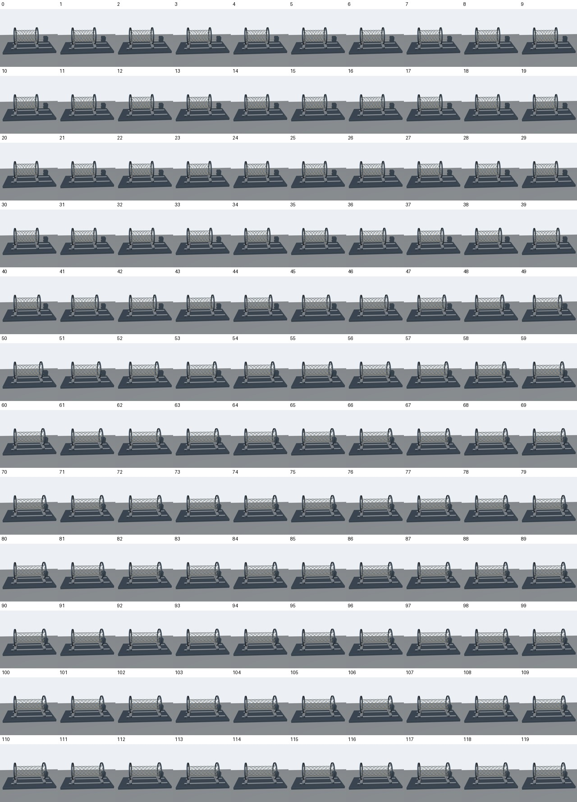
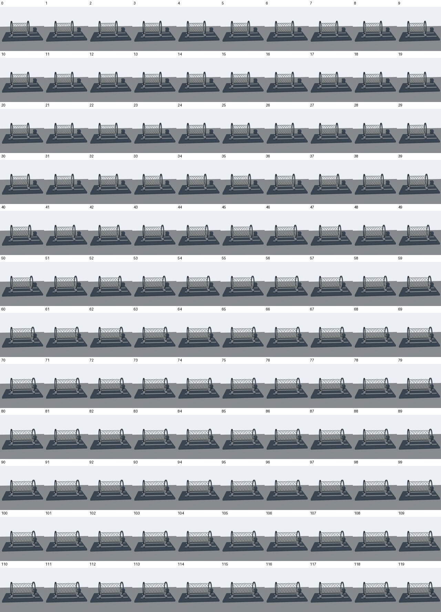
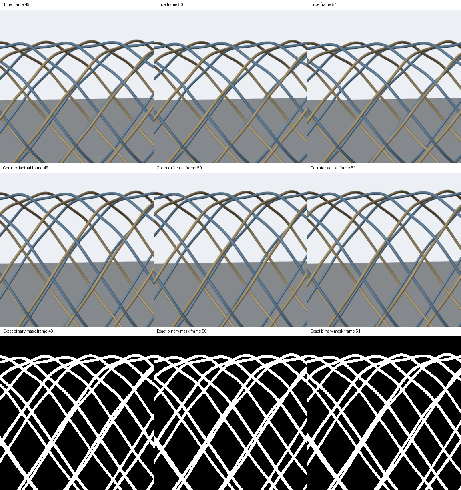
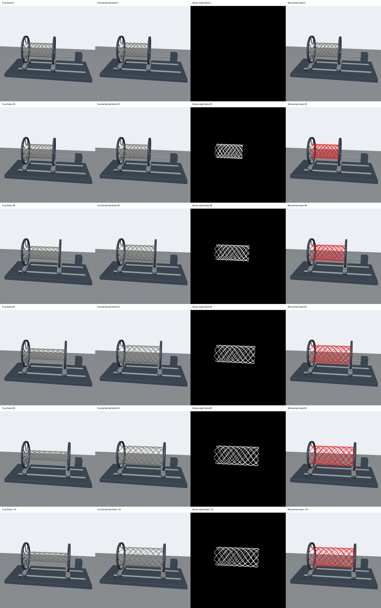
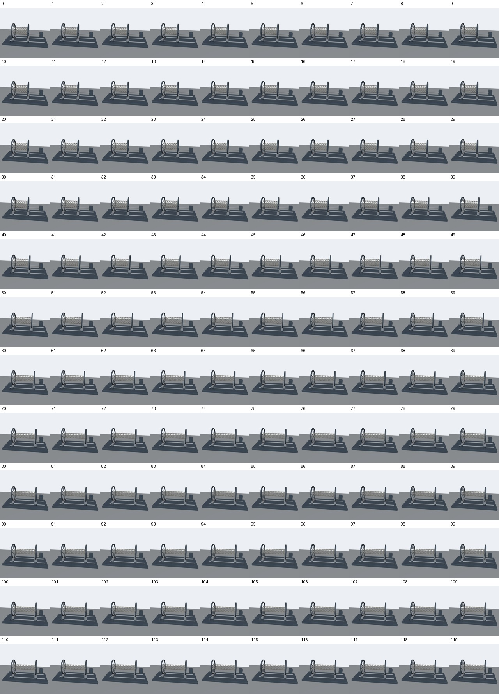
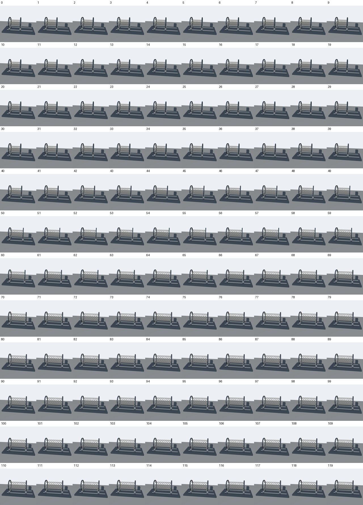
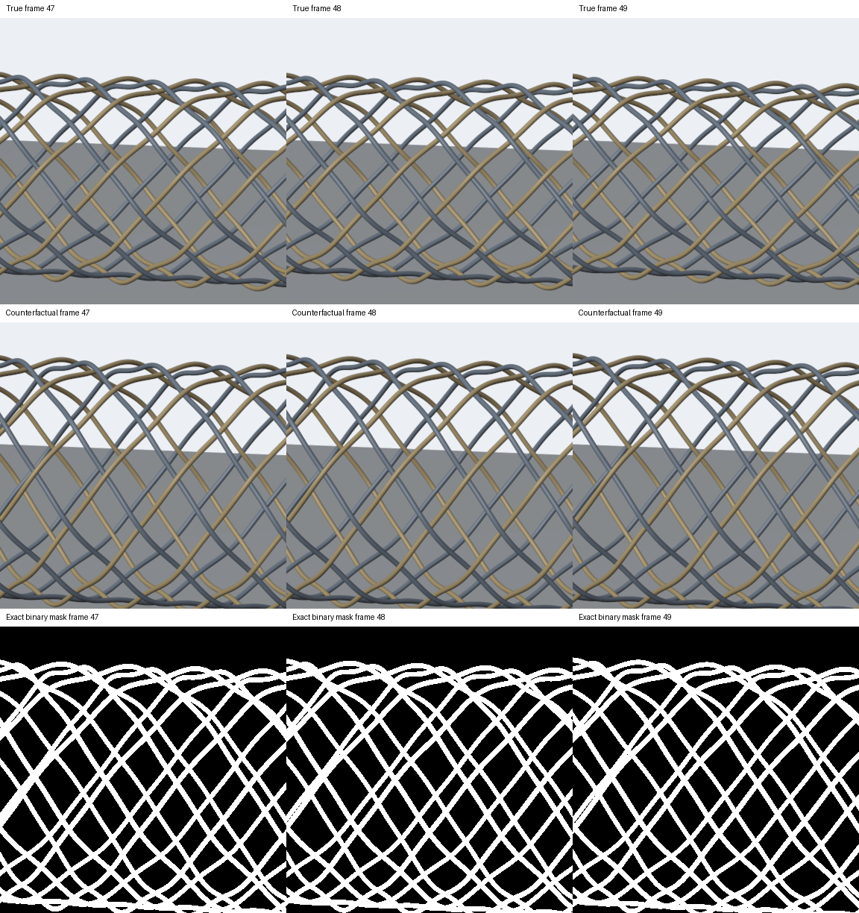

返回五项总览
编织套管拉长却变粗
自检完成 · 等待你确认 · 尚未提交 Sara
braided_sleeve_extension_radial_expansion
源码草稿 PR #716
审核版本：41b5800036b424fbfca673b2504d9f136a069af0
每个样例有正常、反事实、黑白遮罩和红色叠加四路视频。播放器使用兼容浏览器的 1024×1024 播放副本；正式视频为原生 2048×2048、24 fps、120 帧、5 秒。播放副本中 RGB 和叠加为有损编码，不替代正式像素审核；黑白遮罩另做严格二值检查。所有正式原片均有完整 HTTPS 链接与 SHA256。
样例 42
干预帧 24；首次变化 24；证据帧 50。
两份独立提示词
正常A hollow braided sleeve made from inextensible interwoven fibers is held by end grips with freely sliding radial fingers. An actuator slowly pulls the grips apart along their common axis. As the sleeve lengthens, its circumference and diameter decrease; the fibers keep their length while the braid angle changes.
反事实A hollow braided sleeve made from inextensible interwoven fibers is held by end grips with freely sliding radial fingers. An actuator slowly pulls the grips apart along their common axis. As the sleeve lengthens, its diameter anomalously increases instead of decreasing, requiring the supposedly inextensible fibers to stretch.
元数据 · 文件清单及校验值 · 正式编码检查
最终视频解码关键帧

正常视频全部 120 帧

反事实视频全部 120 帧

连续原生像素边缘检查 · 样例 42

裁剪坐标与版本绑定
样例 98
干预帧 28；首次变化 28；证据帧 48。
两份独立提示词
正常A hollow braided sleeve made from inextensible interwoven fibers is held by end grips with freely sliding radial fingers. An actuator slowly pulls the grips apart along their common axis. As the sleeve lengthens, its circumference and diameter decrease; the fibers keep their length while the braid angle changes.
反事实A hollow braided sleeve made from inextensible interwoven fibers is held by end grips with freely sliding radial fingers. An actuator slowly pulls the grips apart along their common axis. As the sleeve lengthens, its diameter anomalously increases instead of decreasing, requiring the supposedly inextensible fibers to stretch.
元数据 · 文件清单及校验值 · 正式编码检查
最终视频解码关键帧

正常视频全部 120 帧

反事实视频全部 120 帧

连续原生像素边缘检查 · 样例 98

裁剪坐标与版本绑定
申请 JSON（尚未提交）
打开完整 JSON
{
"generator_name": "braided_sleeve_extension_radial_expansion",
"pr_url": "https://github.com/hipo-dev/counterfactual-data/pull/716",
"head_sha": "41b5800036b424fbfca673b2504d9f136a069af0",
"review_url": "https://asysama.github.io/counterfactual-materials-reviews-20261018/braided_sleeve_extension_radial_expansion/41b5800036b424fbfca673b2504d9f136a069af0/index.html",
"note": "Contributor self-check complete for this exact PR head: two native 2048×2048, 24fps, 120-frame cases; four decoded streams, matched prefix, object-only binary masks/red overlays, independent mechanics, geometry identity and native edge checks; 100000 static profiles, rendered axis probes, boundary cases, runtime witnesses and seed42 reproduction verified. Public browser copies play and seek. User review pending; no Sara application submitted.",
"self_check_complete": true
}全部正式视频 HTTPS 地址与 SHA256 · 完整审核材料校验清单